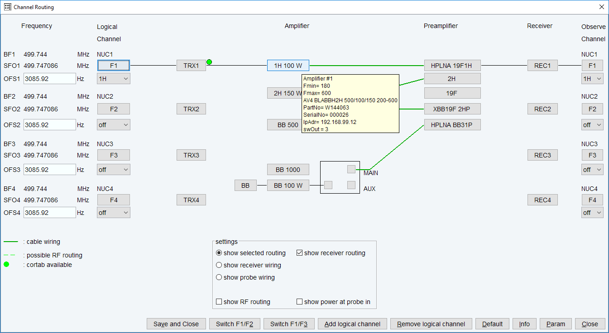
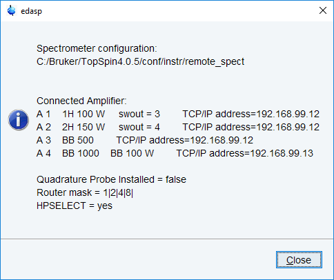
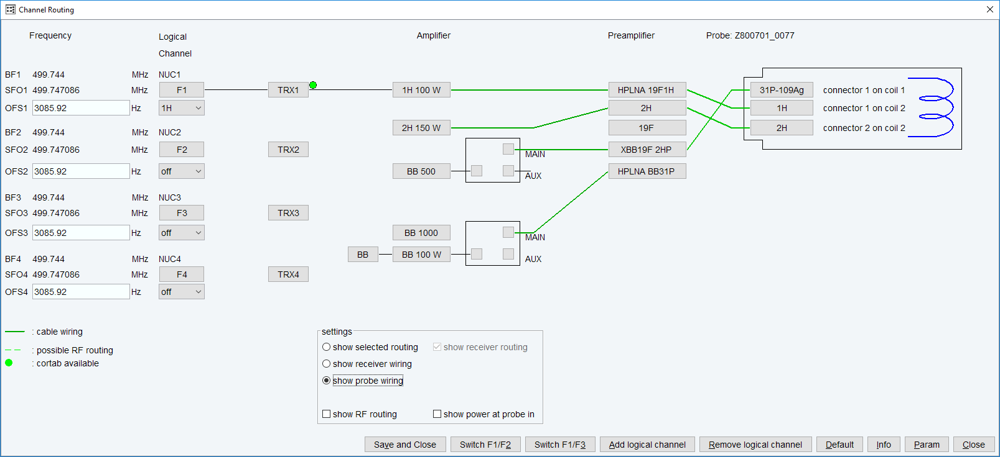

edsp
NAME
edsp/edasp - Set up nuclei and spectrometer routing
DESCRIPTION
The command edsp allows you to set up the nuclei and the spectrometer routing for the current experiment. edsp is equivalent to edasp except for the following:
edasp reads the irradiation frequencies offsets OFS1, OFS2, OFS3 etc. from the current dataset. edsp reads the irradiation frequencies that were last saved.

Information about the amplifiers can be easily obtained by dragging the mouse on the amplifier in the edsp/edasp window (see figure above).

Probe wiring can also be inspected:

The following figures will present several features (tabs) that can be obtained through the main edsp/edasp window:

edsp reads the irradiation frequencies offsets OFS1, OFS2, OFS3 etc. that were stored by the previous edsp or edasp.
As such, edsp/edasp allows you to transfer the frequency offset for a certain nucleus from one dataset to another. For example:
DATASET 1
rpar PROTON all
edasp or edsp =>
BF1 500.130 MHz NUC1
SFO1 500.135 Mhz F1
OFS1 5000.00 Hz 1H
SAVE
DATASET 2
rpar C13CPD all
edsp =>
BF1 125.757 MHz NUC1
SFO1 125.758 Mhz F1
OFS1 1000.00 Hz 13C
BF2 500.130 MHz NUC2
SFO2 500.135 Mhz F2
OFS2 5000.00 Hz 1H
The irradiation frequencies SFO1, SFO2 etc. are automatically adjusted to the corresponding frequency offsets.
The command edsp will be executed as part of the spectrometer configuration (comman cf) and must be executed before expinstall which installs the standard parameter sets.
INPUT AND OUTPUT PARAMETERS
see edasp
INPUT AND OUTPUT FILES
see edasp